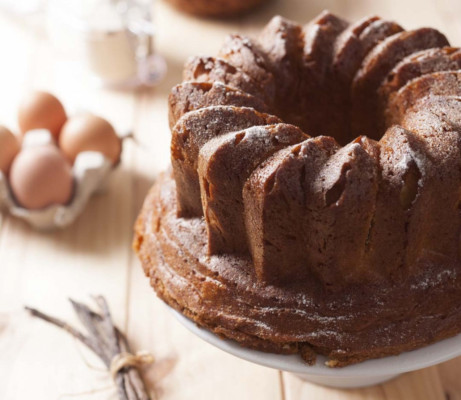

Gâteau de compiègne

Ingrédients
Pour 8 à 10 personnes
Pour la pâte levée :
- 330 g de farine
- 40 g de sucre
- 3 gros oeufs
- 2 jaunes d'oeuf
- 10 g de levure de boulanger déshydratée
- 10 cl de crème fraîche
- 200 g de beurre mou
- 50 g de zestes d'oranges confites
Pour le sirop :
- 30 cl d'eau
- 200 g de sucre
- 1 cuillerée à café de vanille en poudre
Préparation
- Etape 1
Dans un bol (ou au robot), mélangez la farine, le sucre et la levure. Incorporez les oeufs, les jaunes et la crème. Mélangez petit à petit jusqu’à avoir une pâte bien lisse.
- Etape 2
Ajoutez ensuite le beurre pommade et mélangez en faisant attention de ne pas trop chauffer la pâte. Elle va être assez liquide et élastique. Incorporez les zestes d’oranges confites.
- Etape 3
Versez-la dans un moule à kouglof et laissez lever 1h dans un endroit tiède (près d’un radiateur par exemple).
- Etape 4
Faites cuire le gâteau de Compiègne 35 min dans le four préchauffé à 180°C.
- Etape 5
Pendant ce temps, faites le sirop : mélangez le sucre et l’eau et portez-les à ébullition. Hors du feu, ajoutez la vanille. Réservez.
- Etape 6
Sortez le gâteau du four et laissez-le complètement refroidir avant de le démouler. Puis coupez la base du gâteau (pour qu’il tienne bien droit sur une assiette).
- Etape 7
Réchauffez légèrement le sirop et versez-le sur le gâteau : vous pouvez verser un peu de sirop dans le moule, remettre délicatement le gâteau et versez le reste du sirop sur le gâteau. Laissez reposer quelques minutes
puis égouttez le gâteau sur une grille.
- Etape 8
Servez le gâteau de Compiègne saupoudré de suce glace, à l’heure du thé !
Page d'accueil